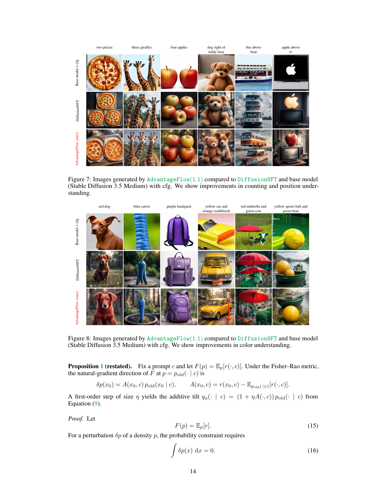
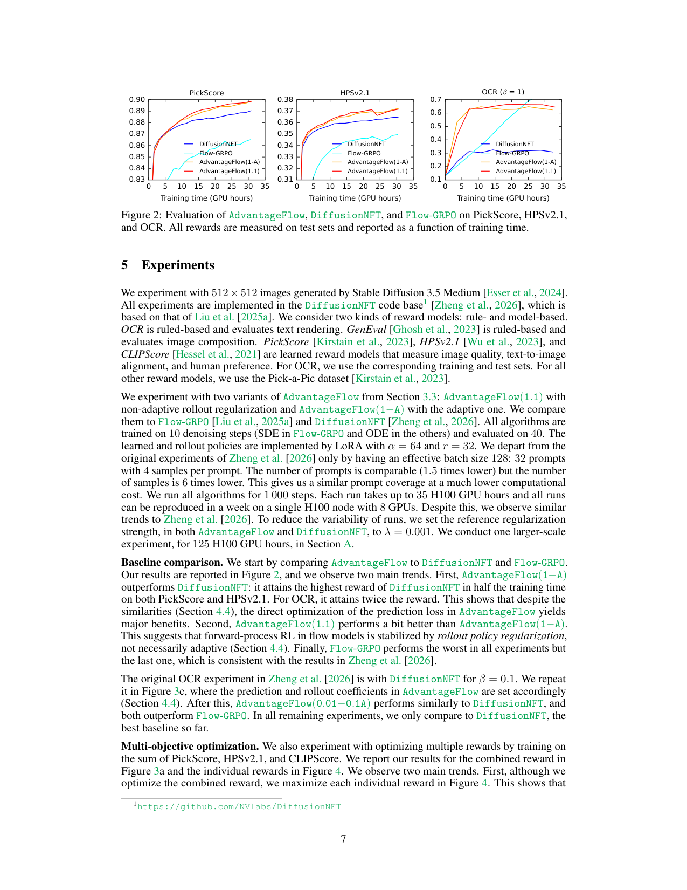
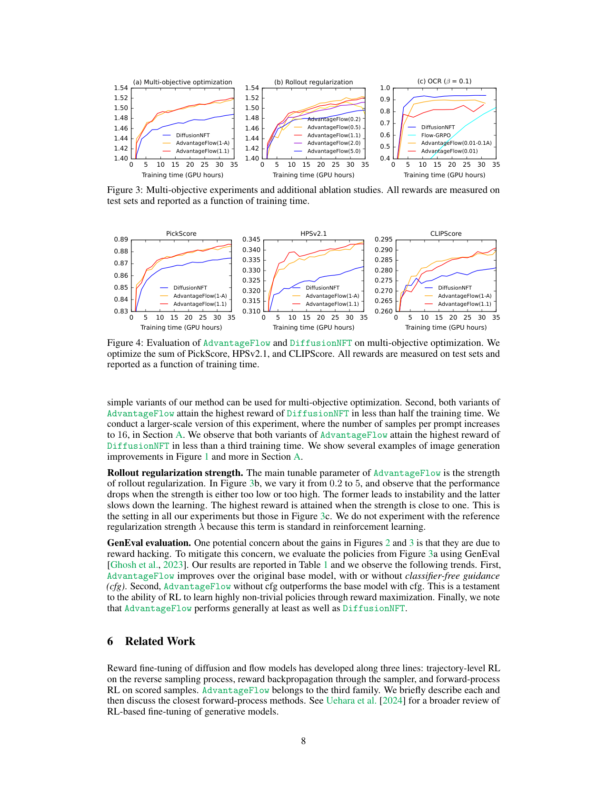
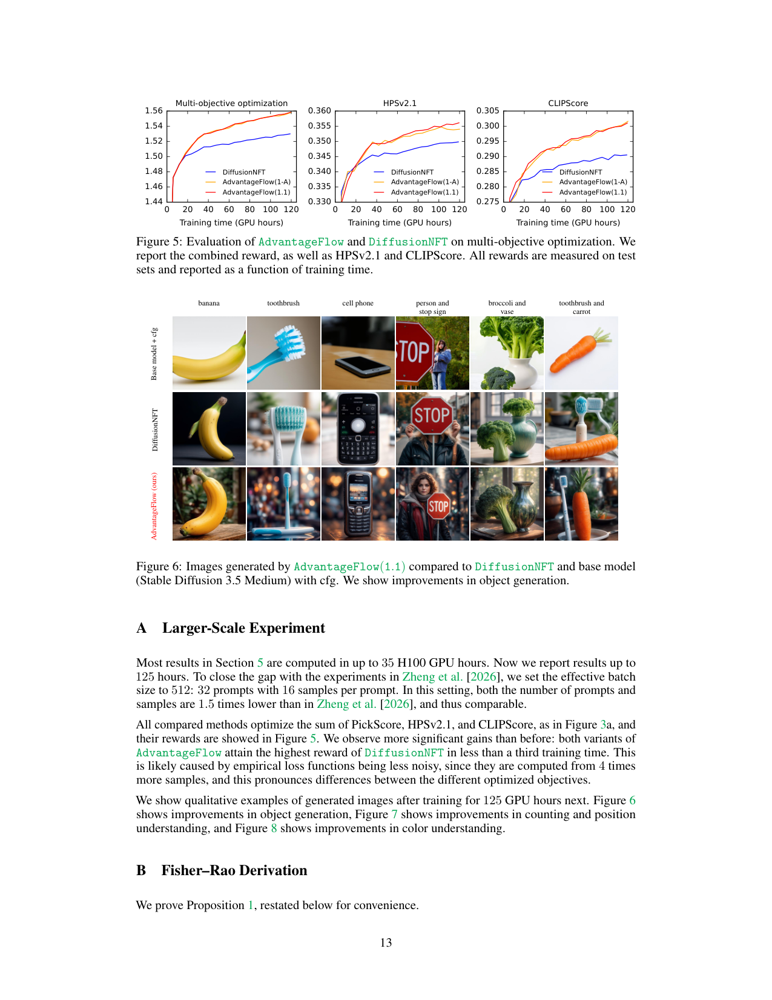

AdvantageFlow introduces a simpler, forward-process RL algorithm for flow models that uses advantage-weighted least squares with rollout regularization to achieve stable training and state-of-the-art image generation results.
本文提出AdvantageFlow，一种用于流模型的简化前向过程强化学习算法。它通过优势加权最小二乘与滚动策略正则化，在Stable Diffusion 3.5 Medium上实现了优于Flow-GRPO等方法的图像生成性能，并支持多目标优化。
Deep Note — advantageflow
Key Takeaways - AdvantageFlow optimizes rectified flow models using advantage-weighted least squares on the forward process, avoiding complex policy gradients on the reverse denoising trajectory. - Rollout policy regularization stabilizes training by ensuring convexity per sample and reducing variance from noisy advantage-weighted targets. - Outperforms Flow-GRPO and negative-aware fine-tuning on Stable Diffusion 3.5 Medium for image generation tasks. - Enables multi-objective optimization and shows improved prompt following in object counting, color, and position understanding without classifier-free guidance.
0) Metadata
- Title: AdvantageFlow: Advantage-Weighted Least Squares for RL in Flow Models
- Alias: advantageflow
- Authors: Branislav Kveton, Anup Rao, Subhojyoti Mukherjee, Krishna Kumar Singh, Viet Dac Lai
- arXiv ID: 2605.26013
- Published:
- Links:
- Abs: https://arxiv.org/abs/2605.26013
- HTML: https://arxiv.org/html/2605.26013v1
- PDF: https://arxiv.org/pdf/2605.26013
- Tags: reinforcement-learning, flow-models, image-generation, advantage-weighting, forward-process
- Domains: ai_safety
- Rating: 4/5 (base 1 + quality 2 + observation 1)
1) Why-read
AdvantageFlow introduces a simpler, forward-process RL algorithm for flow models that uses advantage-weighted least squares with rollout regularization to achieve stable training and state-of-the-art image generation results.
2) CRGP
C — Context
Reinforcement learning for diffusion and flow models typically optimizes the reverse denoising process using policy gradients, which require stochastic sampling and complex reward attribution across steps. Forward-process RL offers a simpler alternative by weighting the standard flow-matching loss with rewards, but suffers from instability when advantages are negative.
R — Related work
- Flow-GRPO: optimizes reverse process with policy gradients using stochastic differential equations.
- Negative-aware fine-tuning: a forward-process RL baseline that handles negative advantages.
- DiffusionNFT: a baseline for image generation with classifier-free guidance.
- GenEval: evaluation benchmark to detect reward hacking.
G — Gap
Existing forward-process RL methods for flow models are unstable when advantages are negative because the loss becomes non-convex. Additionally, reverse-process methods like Flow-GRPO require stochastic sampling and complex reward attribution, making them less aligned with deterministic inference.
P — Proposal
AdvantageFlow minimizes an advantage-weighted forward-process prediction loss, where advantages are computed per batch. Rollout policy regularization (fitting to a moving average of the policy) ensures convexity per sample and reduces variance. Reference regularization prevents forgetting of pre-trained capabilities.
---
4) Experiments
Main results
On Stable Diffusion 3.5 Medium, AdvantageFlow outperforms Flow-GRPO and negative-aware fine-tuning across multiple reward models. After 125 H100 GPU training hours, it improves object generation, counting, color understanding, and position understanding without classifier-free guidance. GenEval scores confirm reduced reward hacking.
Ablation
Rollout regularization (γ > 0) is critical for stability; without it, training diverges due to non-convex loss from negative advantages. Reference regularization (λ > 0) preserves pre-trained capabilities not captured by the reward.
Limitations
['Requires multiple samples per prompt (group size K) to compute advantages, increasing computational cost.', 'Performance depends on the choice of regularization strengths γ and λ, which may need tuning per task.', 'Evaluated only on image generation with Stable Diffusion 3.5 Medium; generalization to other modalities or architectures is not shown.']
5) Why it matters
- Provides a simpler, more stable alternative to policy-gradient-based RL for flow models, reducing engineering complexity.
- Rollout regularization as a variance reduction technique is a principled insight that could apply to other RL-from-feedback settings.
- Demonstrates that forward-process RL can achieve SOTA without stochastic sampling, aligning better with deterministic inference.
6) Next steps
- [ ] Apply AdvantageFlow to other flow-based generative models (e.g., video, audio, text).
- [ ] Explore adaptive tuning of γ and λ based on reward variance or training dynamics.
- [ ] Combine with multi-objective reward models for more nuanced alignment.
- [ ] Investigate theoretical convergence guarantees for the advantage-weighted least squares objective.
7) Scoring
4/5 = base 1 + quality 2 + observation 1
AdvantageFlow：流模型中基于优势加权最小二乘的强化学习
主要结论 - AdvantageFlow利用前向过程中的优势加权最小二乘优化整流流模型，避免了反向去噪轨迹上复杂的策略梯度。 - 滚动策略正则化通过保证每个样本的凸性并降低噪声优势加权目标的方差，稳定了训练过程。 - 在Stable Diffusion 3.5 Medium的图像生成任务上，AdvantageFlow优于Flow-GRPO和负感知微调方法。 - 该方法支持多目标优化，在物体计数、颜色和位置理解等提示遵循方面有改进，且无需无分类器引导。
1) 阅读理由
AdvantageFlow提出了一种更简单、稳定的前向过程强化学习算法，通过优势加权最小二乘和滚动正则化实现流模型的稳定训练，并在图像生成上达到最先进水平。
2) CRGP（背景 / 相关工作 / 差距 / 方案）
上下文：扩散和流模型的强化学习通常使用策略梯度优化反向去噪过程，需要随机采样和复杂的跨步奖励分配。前向过程强化学习通过用奖励加权标准流匹配损失提供更简单的替代方案，但当优势为负时训练不稳定。相关工作：Flow-GRPO使用随机微分方程的策略梯度优化反向过程；负感知微调是一种处理负优势的前向过程强化学习基线；DiffusionNFT是带无分类器引导的图像生成基线；GenEval是检测奖励破解的评估基准。差距：现有前向过程强化学习方法在优势为负时因损失非凸而不稳定；反向过程方法如Flow-GRPO需要随机采样和复杂奖励分配，与确定性推理不一致。提案：AdvantageFlow最小化优势加权的前向过程预测损失，优势按批次计算。滚动策略正则化（拟合策略的移动平均）保证每个样本的凸性并降低方差。参考正则化防止遗忘预训练能力。
3) 实验
在Stable Diffusion 3.5 Medium上，AdvantageFlow在多个奖励模型上优于Flow-GRPO和负感知微调。经过125小时H100 GPU训练后，它改进了物体生成、计数、颜色理解和位置理解，且无需无分类器引导。GenEval分数证实了奖励破解的减少。
消融实验
滚动正则化（γ > 0）对稳定性至关重要；没有它，训练会因负优势导致的非凸损失而发散。参考正则化（λ > 0）保留了奖励未捕获的预训练能力。
局限性
['每个提示需要多个样本（组大小K）来计算优势，增加了计算成本。', '性能依赖于正则化强度γ和λ的选择，可能需要针对任务进行调优。', '仅在Stable Diffusion 3.5 Medium的图像生成上评估，未展示对其他模态或架构的泛化能力。']
4) 重要性
- 为流模型提供了一种比策略梯度更简单、更稳定的强化学习替代方案，降低了工程复杂性。
- 滚动正则化作为一种方差减少技术，是一个有原则的洞见，可应用于其他从反馈中学习的强化学习场景。
- 证明了前向过程强化学习无需随机采样即可达到最先进水平，与确定性推理更一致。
5) 下一步
- [ ] 将AdvantageFlow应用于其他基于流的生成模型（如视频、音频、文本）。
- [ ] 探索基于奖励方差或训练动态自适应调整γ和λ。
- [ ] 与多目标奖励模型结合，实现更细致的对齐。
- [ ] 研究优势加权最小二乘目标的理论收敛保证。



